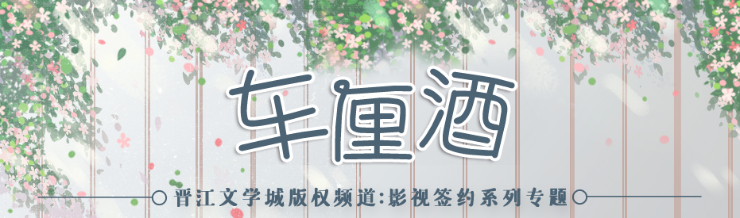
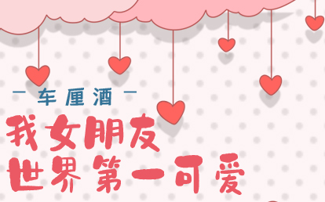

专项首页
签约小说内容： 阮安安在国外留学归来，想回母校想捐一栋楼，却没想到对偶遇的“在校大学生”顾诀一见钟情，她决定以顾诀同学的身份重回校园。却不料，对方也不是单纯的在校大学生。原想套路他的阮安安，竟然被“反套路”了。 这是两个家境富足的学霸互相在对方面前装穷、装作是普通大学生，由此相知相爱的故事，是一个充满趣味性的都市爱情故事。 男女主双方演技一流，最后知道真相的掉马时刻更是精彩纷呈。而在啼笑皆非的同居养猫日常、相知相爱的过程中，也有着少年人在竞赛中追逐所付出的奋斗精神，有着对彼此过去经历的救赎和治愈，在对彼此爱意的加深中，他们成为了更好的自己，拥有了更好的未来。 本文2020年签约网络剧版权。 作者创作历程： 一直以来都很喜欢玩游戏“开小号”这件事情，也就是满级大佬回新手村，所以渐渐在脑子里有了灵感和构思。想写的是两个人生赢家满级大佬互相以为对方是萌新，为了迎合对方，所以装作自己也是萌新的故事——女主以为自己在套路别人，实际上自己才是被套路的那一个。想象一下真相大白的那天，都会不自觉想笑，所以就有了动笔的想法。
本文前期背景立足于大学校园，却不仅仅是单纯的校园文：男女主都有各自的生活圈子，兼顾校园和比赛的同时还要顾及公司，经常在各种场景来回切换，两人在酒吧、公司等地风生水起，每当回到校园，又再次在对方面前扮演起“清纯大学生”的人设。频频面临“掉马边缘”。
此外，男女主掉马契机是男女主家族公司的VR合作项目，虚拟现实联系到网游，是一项目前已经出现、但还未能普及的技术，文里这点也有着对未来发展这项技术的憧憬。

·败酱是真社恐，但是除了社交什么都会！ ·败酱的美貌是无敌的。 ·纸片人不要带入现实！ ·纸片人不要带入现实！ ·纸片人不要代入现实！ 【重要的事情说三遍！！！】